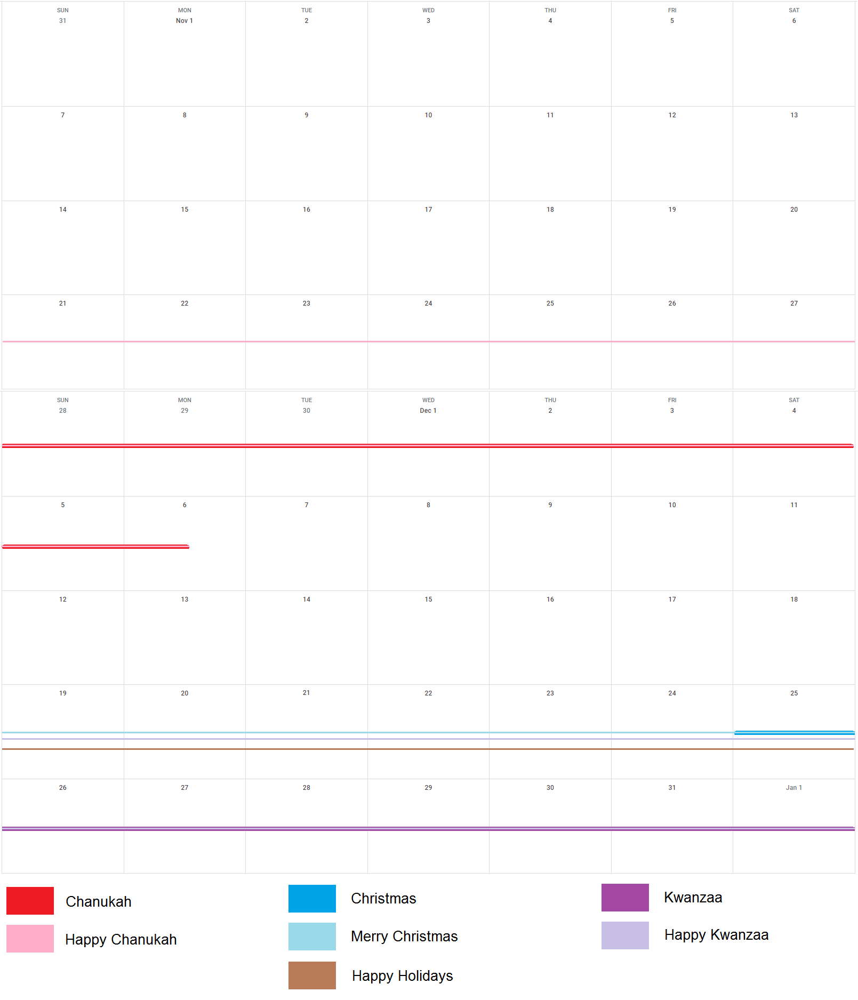

Mi holiday es su holidayWishing “happy holidays” around one holiday and no others is like waking up on your birthday and asking everyone what gifts they got. Look, it’s nice that you want to wish people well on their most important holidays. It really is. But could you do it with a modicum of effort and respect rather than just genericizing your own most important holiday? For the record, I don’t mind being wished a Merry Christmas. Most people (in my country, the U.S.) are Christian, so it’s a pretty safe bet that anyone you meet is likely Christian. The issue is with being wished “happy holidays” when there are no other holidays at that time, and those wishes stop as soon as Christmas is over. I made a sort of infographic: You failed because you triedIf people didn’t try to wish “happy holidays” in such a precise timeframe, it might have succeeded. Unfortunately, other holidays don’t coincide precisely with Christmas, and the cutoffs for “happy holidays” are rather sharp. The only holidays I can guess that “happy holidays” was meant to include given the time of year are Christmas, Chanukah, and Kwanzaa. But Chanukah ended weeks ago this year, and “happy holidays” stops right after Christmas, which is when Kwanzaa begins. While “happy holidays” pretends to be generic and open-minded, it really just assumes that other cultures also celebrate Christmas, but they don’t call it “Christmas,” they call it a quarter-pounder. However, other cultures actually have their major holidays at various times of the year. Judaism has its major holidays in the spring (Passover) and late summer (new year and Yom Kippur). Tết, the Vietnamese new year, is in the spring. Ramadan is in the spring as well. Kwanzaa, an African-American celebration, runs from December 26 to January 1. Winter holidays get elevated to popularity just due to their proximity to Christmas. Chanukah, for example, gets much more mainstream attention than Judaism’s actual major holidays, just because it’s in the winter. The movie The Hebrew Hammer even makes a joke out of this, with the Jewish protagonist saving Chanukah and his mother dismissing his accomplishment with “it’s not even a high holiday.” Land of ice and snowI want you to imagine you’re not in the States, not in any country you know of – you live there and yet you feel like a stranger in a strange land. One day, trudging through icy slush and wishing you’d worn your thicker gloves, a stranger smiles at you and calls out, “happy holidays!” Startled, you try to say both “hello” and “thanks” and end up with something approaching “helks,” but it doesn’t matter because you had no volume. Clearing your throat, you reply, “you too!” (Nailed it.) The stranger asks if you have any plans for the holiday. Um, no, not really... He looks at you aghast. “You’re not spending the Leap Day with family? February 29th is in just a few days!” You explain that, in your culture, that’s just a number on a calendar, not a holiday. “Oh, I see! Are you American? (You nod.) Well, don’t you do anything for the American holiday season?” After you stand there glassy-eyed for several moments, he prompts you with “you know, Groundhog Day.” Which, of course, is on February 2nd and by this point probably owes most of its fame to the classic movie. Please observe Krusty the Clown delivering holiday wishes with “have a Merry Christmas, Happy Chanukah, Kwazy Kwanzaa, a tip-top Tết, and a solemn, dignified Ramadan.” Ironically, he’s gone to all this effort for the holiday his audience cares about, a holiday he cares about but that ended on December 11 (this was “Grift of the Magi,” s11e09, airing 12/19/1999), a holiday that was upcoming but would abruptly cease to get even spillover attention on the day it started, and two holidays in the spring. It could be worse, of courseI have seen and heard several people swear up and down with absolute certainty that everyone celebrates Christmas. I tell them that e.g. Jewish people don’t, and the reply is “yes they do.” That is a separate problem. TL;DR: If you mean “Merry Christmas,” say “Merry Christmas.” Saying “happy holidays” when it’s clearly only relevant to one specific holiday makes it a shallow, hollow gesture. |
{kind=link}